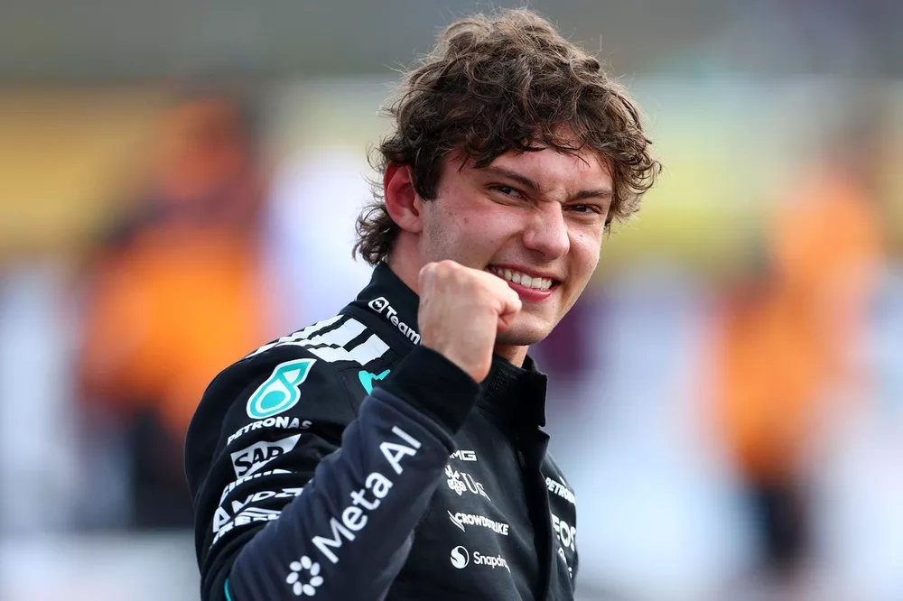

Kimi Antoneli, de promessa a realidade
Como Kimi está se tornando um dos melhores pilotos atuais da F1
Andrea Kimi Antonelli, conhecido como Kimi Antonelli, nasceu em Bolonha, Itália, em 25 de agosto de 2006. Filho do ex-piloto de motociclismo Marco Antonelli, ele teve contato com o automobilismo desde muito jovem.
Karting: Antonelli começou a competir de kart ainda criança e rapidamente chamou atenção pelo talento. Ainda muito jovem, passou a conquistar títulos e vitórias em competições italianas e internacionais. O ano de 2026 de Kimi Antonelli na Fórmula 1 é de absoluto domínio, com o piloto italiano da Mercedes liderando o Mundial de Pilotos com 81 pontos de vantagem sobre o compatriota e companheiro de equipe George Russell

Antonelli é a pessoa mais jovem a ocupar a primeira posição em uma corrida da Fórmula 1, no Grande Prêmio da China de 2026, aos 19 anos de idade. Anteriormente era Sebastian Vettel, que havia conquistado esse marco aos 21 anos. No dia seguinte, o italiano conquistou sua primeira vitória na categoria.Outro de seus recordes foi estabelecido ao vencer o Grande Prêmio do Japão de 2026, quando tornou-se o mais jovem piloto a liderar o mundial de Fórmula 1 e o primeiro italiano a fazê-lo desde Giancarlo Fisichella no Grande Prêmio da Austrália de 2005.
